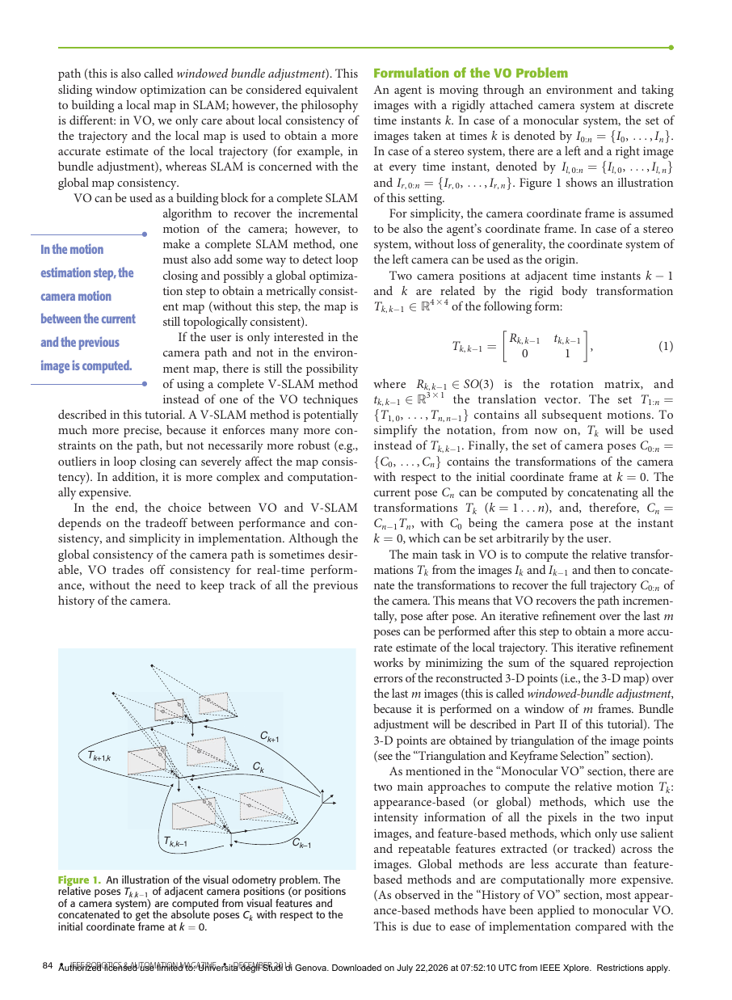

Visual Odometry [Tutorial] Part I: The First 30 Years and Fundamentals
§1 Paper Information
1.1 Metadata
| Title | Visual Odometry Part I: The First 30 Years and Fundamentals |
| Authors | Davide Scaramuzza, Friedrich Fraundorfer |
| Affiliation | ETH Zurich (Scaramuzza), Graz University of Technology (Fraundorfer) |
| Venue | IEEE Robotics & Automation Magazine (IEEE RAM) |
| Year | 2011 · Publication date: 8 December 2011 |
| DOI | 10.1109/MRA.2011.943233 |
| Pages | 80–92 (13 pages in PDF) |
| Type | Tutorial / Survey (2-part series) |
1.2 TL;DR (Chinese Summary)
本文是视觉里程计领域的经典入门教程第一部分，系统梳理了VO从1980年至2011年共30年的发展历程与基本原理。论文从Moravec的第一套运动估计管线讲起，依次介绍了双目VO（从Matthies/Shafer到Nistér的实时系统，再到火星探测车上部署的最终方案）和单目VO（五点法RANSAC、表观方法与混合方法）两条独立发展线的关键节点，同时讨论了漂移抑制（滑动窗口BA、多传感器融合）、VO与V-SLAM的本质区别（局部一致性 vs 全局一致性），最后给出VO的数学表述并概述相机模型与运动估计基础。本教程的定位是为研究者和工程师提供构建完整VO系统所需的指南与参考文献，核心结论是：不存在适用于所有环境的唯一VO方案，最优选择应依据具体导航环境和计算资源审慎决定。
1.3 Tags
Visual OdometryTutorial/SurveyCamera EgomotionSFMStereo VisionMonocular VisionDrift Reduction1.4 本地证据
本页依据同目录 PDF 逐页提取生成；PDF 共 13 页，代表图来自第 4–5 页。所有结论均限定在论文陈述及其评测范围内。
查看本地 PDF 原文证据 (第一页摘要段)
Visual odometry (VO) is the process of estimating the egomotion of an agent (e.g., vehicle, human, and robot) using only the input of a single or multiple cameras attached to it. Application domains include robotics, wearable computing, augmented reality, and automotive. The term VO was coined in 2004 by Nister in his landmark paper. ... This two-part tutorial and survey provides a broad introduction to VO and the research that has been undertaken from 1980 to 2011. ... Part I (this tutorial) presents a historical review of the first 30 years of research in this field and its fundamentals.
§2 Core Insight & Novelty
Q: 视觉里程计的本质是什么？它与SFM和V-SLAM的根本区别在哪里？
A: VO的本质是增量式、仅用相机输入的载体自运动估计，核心洞察在于：VO只需关注局部轨迹一致性，通过帧间运动串联得到完整路径，而不需要维护全局一致的地图。这种"局部优化、增量串联"的哲学使得VO能够在计算复杂度与实时性之间取得最优权衡。与SFM的区别在于：SFM同时恢复结构与相机位姿并通常需要离线全局BA，而VO仅需在线序贯估计3D运动。与V-SLAM的关键分野在于：V-SLAM追求全局地图一致性（需要回环检测和全局优化），而VO只保证相邻若干帧内的局部一致性，代价是漂移累积，收益是极低的计算开销和实现复杂度。
2.1 灵感到洞察映射表
| 灵感来源 | 核心洞察 | 具体体现 |
|---|---|---|
| 轮式里程计 (Wheel Odometry) | 增量累加的思想可迁移至视觉域：每帧估计一个小的相对运动，串联即得完整轨迹 | VO的定义公式 $C_n = C_{n-1} T_n$，逐帧拼接相对位姿 $T_k$ 恢复绝对位姿 $C_{0:n}$ |
| Structure from Motion (SFM) | 将SFM从"离线全局优化3D结构与相机位姿"聚焦为"在线序贯恢复3D运动" | 仅保留SFM中的帧间运动估计模块，将BA限定在滑动窗口内仅优化最后 $m$ 帧 |
| 火星探测车（NASA Mars Rover）需求 | 在GPS拒止、轮子打滑的极端环境中，相机是唯一可靠的运动传感器 | Moravec 1980年首次VO管线即针对行星漫游车；后续Cheng等人的系统被实际部署于火星车 |
| Stereo vs Monocular 两条独立发展线 | 双目可直接三角化获取3D点→用3D-3D/3D-2D求解运动；单目仅有方位角→必须同时恢复结构与尺度 | 双目VO：3D-3D点配准；单目VO：Nistér五点法最小求解器+RANSAC |
2.2 创新点卡片
① 系统性的VO历史梳理与方法分类框架
② VO vs V-SLAM 的本质区分
③ 完整的VO问题数学表述与相机模型基础
§3 System Architecture
3.1 VO Pipeline Overview
① 图像采集与相机模型 Camera Model
② 特征检测与对应 Correspondence
③ 运动估计 Motion Est.
④ 局部优化与输出 Optimization
3.2 系统流程图
单目图像序列 / 双目图像对"] --> B{"相机模型选择
透视 / 全向 / 折反射"} B --> C["🔍 特征检测与对应
角点检测 → 跨帧跟踪/匹配"] C --> D{"相机配置判断"} D -->|双目| E1["📐 三角化获取3D点
3D-3D或3D-2D运动估计"] D -->|单目| E2["📏 仅2D方位信息
2D-2D对极几何 + 尺度恢复"] E1 --> F["🧹 外点剔除
RANSAC / 五点法 / 深度一致性"] E2 --> F F --> G["📊 运动估计求解
加权最小二乘 / ICP / PnP"] G --> H["🔗 轨迹拼接
Cₙ = Cₙ₋₁ Tₙ"] H --> I["📐 滑动窗口BA
优化最后m帧的局部轨迹"] I --> J["🎯 输出：6-DoF位姿序列 + 局部3D地图"] I -.->|可选| K["🛰 多传感器融合
+GPS / +IMU / +激光"] style A fill:#fff7ed,stroke:#fed7aa style J fill:#ecfdf5,stroke:#bbf7d0
3.3 运动估计方法分类图
(Global Methods)"] A --> C["Feature-based
(Local Methods)"] B --> B1["Fourier-Mellin变换
Goecke et al."] B --> B2["模板跟踪
Milford & Wyeth"] B --> B3["混合方法
Scaramuzza & Siegwart"] C --> C1["双目VO
3D-3D / 3D-2D"] C --> C2["单目VO
2D-2D + 尺度恢复"] C --> C3["运动约束VO
非完整约束/地面平面"] C1 --> C1a["Moravec 1980
Matthies & Shafer
Olson et al.
Cheng et al. (Mars)
Nistér et al. 2004
Comport et al."] C2 --> C2a["Nistér 5-pt RANSAC
Corke et al.
Lhuillier
Mouragnon et al.
Tardif et al."] C3 --> C3a["1-pt RANSAC
Scaramuzza et al.
Pretto et al."] end style A fill:#f0ebfd,stroke:#8b5cf6
§4 Research Task
4.1 问题形式化
一个智能体在环境中运动，在离散时刻 $k$ 使用刚性固定的相机系统拍摄图像。记相邻时刻 $k-1$ 和 $k$ 的相机位姿由刚体变换关联：
$$ T_{k,k-1} = \begin{bmatrix} R_{k,k-1} & t_{k,k-1} \\ 0 & 1 \end{bmatrix}, \quad R_{k,k-1} \in SO(3),\; t_{k,k-1} \in \mathbb{R}^3 $$全部帧间运动集合为 $T_{1:n} = \{T_{1,0}, \ldots, T_{n,n-1}\}$。相机相对于 $k=0$ 初始坐标系的位姿为：
$$ C_n = C_{n-1} T_n $$VO的核心任务是：仅从图像 $I_k$ 和 $I_{k-1}$ 计算相对变换 $T_k$，再串联恢复完整轨迹 $C_{0:n}$。可在最后 $m$ 帧上执行滑动窗口BA以精化局部轨迹。
4.2 输入/输出规范
| 维度 | 单目VO | 双目VO |
|---|---|---|
| 输入 | 图像序列 $I_{0:n} = \{I_0,\ldots,I_n\}$（单相机） | 图像对序列 $(I_{l,0:n}, I_{r,0:n})$（双目/多目系统） |
| 输出 | 6-DoF轨迹 $C_{0:n}$（平移仅到尺度） + 3D结构（相对尺度） | 6-DoF轨迹 $C_{0:n}$（度量尺度） + 3D结构（绝对尺度） |
| 前提条件 | 充足光照、静态且纹理丰富的场景、连续帧间充分重叠 | |
| 相机模型 | 透视投影模型（标准针孔）或全向/折反射模型 | |
| 评价指标 | 相对位置误差 (0.1–2%)、绝对轨迹误差 (ATE)、漂移速率 | |
| 计算约束 | 实时性要求（帧率处理），滑动窗口BA仅限最后 $m=5\sim20$ 帧 | |
§5 Key Challenges
VO的核心困境在于：精度、实时性和鲁棒性构成"不可能三角"。增量拼接必然导致误差累积（漂移），这是任何纯前向VO都无法消除的结构性缺陷。要减小漂移就需要更多约束，但这直接与实时性要求冲突。同时，VO对环境的假设（充足光照、静态纹理场景、充分帧间重叠）在实际应用中极易被违反。论文明确指出："不存在适用于所有工作环境的唯一VO方案"，这是对VO方法边界条件的清醒认识。
5.1 先前方法对比
| 方法与代表工作 | 方案 | 核心策略 | 主要局限 |
|---|---|---|---|
| Moravec 1980 | Stereo | 滑轨立体相机 + Moravec角点 + NCC匹配 + 3D-3D加权最小二乘 | 仅离线处理；特征跟踪会漂移；标量不确定性不够精确 |
| Matthies & Shafer | Stereo | 双目系统 + 三角化误差协方差矩阵融入运动估计 | 仍依赖交叉相关跟踪，特征漂移未解决 |
| Olson et al. | Stereo | Forstner角点 + 绝对定向传感器将误差从超线性降为线性 | 需要额外硬件传感器 |
| Cheng et al. (Mars) | Stereo | Harris角点 + 相关曲线曲率定义协方差 + RANSAC | 依赖稠密立体匹配；火星车严格非实时 |
| Nistér et al. 2004 | Stereo | 独立检测特征 + 3D-2D运动估计 + 五点法RANSAC | 五点法对纯旋转/平面场景退化的处理需额外逻辑 |
| 单目VO各方法 | Mono | 五点法RANSAC + 窗口BA；或表观法；或混合法 | 尺度模糊是先天缺陷；表观法对遮挡敏感 |
| Scaramuzza 1-pt RANSAC | Mono | 车辆非完整约束 + 1点RANSAC，加速至400Hz | 仅适用于地面车辆，不适用于6-DoF飞行器 |
5.2 三个核心挑战
| # | 挑战 | 详细分析 | 论文给出的解决方案 |
|---|---|---|---|
| 1 | 增量漂移累积 | 逐帧串联位姿，每帧微小误差随时间积分导致轨迹偏离真值。纯VO误差呈超线性增长（方向误差导致位置误差随距离放大）。 | (a) 滑动窗口BA可降低位置误差2–5倍；(b) 传感器融合：加绝对定向传感器将误差增长降为线性；加GPS/IMU/激光里程计进一步抑制漂移 |
| 2 | 特征对应失败 | 弱纹理区域无可检测特征；动态物体产生虚假运动；光照变化破坏特征描述子；遮挡导致特征丢失。 | (a) 选择信息量高的特征；(b) RANSAC统计容忍外点；(c) 关键帧选择避免冗余和退化帧；(d) 表观方法作为补充 |
| 3 | 单目尺度模糊 | 仅从方位信息无法恢复绝对尺度，两帧间平移只能确定方向。尺度漂移会累积导致轨迹整体缩放失真。 | (a) 场景元素直接测量；(b) 非完整约束利用转弯恢复尺度；(c) 多传感器融合：IMU/气压计/激光/深度传感器 |
§6 Method Details
6.1 核心公式组
6.2 关键参数表
| 参数 | 符号 | 典型值/范围 | 含义与影响 |
|---|---|---|---|
| 相机内参矩阵 | $K$ | $3 \times 3$ 上三角矩阵 | 焦距、主点、倾斜参数；标定误差直接进入运动估计 |
| 双目基线 | $b$ | 0.1–1.0 m | 基线越长远距离深度精度越高，但近距离盲区越大 |
| 滑动窗口大小 | $m$ | 5–20 帧 | 需平衡实时性与精度 |
| RANSAC迭代次数 | $N$ | $N = \frac{\log(1-p)}{\log(1-w^s)}$ | $w$=内点率，$s$=最小样本数，$p=0.99$ |
| 最少匹配点数 | $s$ | 5 (单目), 3 (双目PnP) | 最小求解器的自由度 |
| 特征点数量 | -- | 100–1000/帧 | 特征越多越鲁棒但开销越大 |
| 相对位置误差 | -- | 0.1–2% | VO核心精度指标 |
| 帧率 | -- | 10–30 Hz | 帧率越高帧间运动越小但处理压力越大 |
§7 Underlying Principles
7.1 增量运动累积的几何不变性原理
VO之所以有效，其最底层的几何原理在于：相机在刚性场景中的运动等价于场景点在相机坐标系下的反向刚体变换。设场景中一个3D点在世界系下为 $X_w$，相机在时刻 $k$ 的位姿为 $(R_k, t_k)$，则该点在相机系下的坐标为 $X_c^{(k)} = R_k^T (X_w - t_k)$。两个时刻之间相机系下点的坐标变化完全由相机自身的相对运动决定，而与场景几何无关（只要场景是静态的）。因此，从图像中恢复的2D特征运动可以直接反推出相机的6-DoF运动。
✅ 双目VO的3D-3D配准
本质：立体三角化提供度量深度的特征点，运动估计退化为两组3D点之间的最优刚体变换求解。
优点：绝对尺度已知；对近景效果极好。
退化条件：场景距离 >> 基线时深度不确定性急剧增大。
⚠ 单目VO的2D-2D约束
本质：仅有方位信息，利用对极几何从2D对应点恢复本质矩阵 $E$，分解得 $(R,t)$ 但平移仅为方向。
优点：硬件简单；远距离不受基线限制。
退化条件：纯旋转运动、平面场景、低视差运动。
7.2 局部优化替代全局优化的计算效率原理
VO设计中一个关键的工程洞察是：不需要每一帧都参加全局优化。对于大多数导航任务，用户只关心"当前在哪里"。采用"关键帧 + 滑动窗口BA"的策略使计算复杂度从 $O(n^3)$ 降为 $O(m^3)$，保证无论轨迹多长都能实时运行。代价是丧失了全局一致性：当轨迹形成回环时VO不会自动闭合。
7.3 特征选择与不确定性传播的统计原理
论文综述的历史演进揭示了VO方法精度的持续提升很大程度上来自对不确定性建模的不断精化。从Moravec的标量权重，到Matthies/Shafer的完整误差协方差矩阵，再到Lacroix/Cheng的基于相关曲线曲率的特征质量评估，每一次进步都源于对"哪些信息是真正可靠的"这一问题的更深刻理解。对UAV视觉导航的直接启示：在计算资源受限的情况下，选择"信息量最大且不确定性最小"的特征子集，比简单地增加特征数量更有效。
§8 Representative Figures
8.1 Figure 1: VO问题图示

核心信息：该图展示了VO的基本工作逻辑——相邻时刻的相机位姿由相对刚体变换 $T_{k,k-1}$ 关联，这些相对变换从视觉特征中计算得到，再通过串联恢复相对于初始坐标系的绝对位姿。
- 增量性：每个新位姿 $C_k$ 仅依赖于前一时刻位姿 $C_{k-1}$ 和刚计算出的 $T_{k,k-1}$，体现了序贯处理的本质
- 误差传播路径：$T_{k,k-1}$ 中的误差传递到 $C_k$，再通过 $C_k$ 传递给下一帧，形成误差的正反馈
- 与SLAM的区别：图中只有前向连接，没有回环约束
8.2 VO发展历史里程碑
VO 30年发展关键节点：
- 1980年代：Moravec首创滑轨立体VO管线——四个模块至今仍是VO的标准组成
- 1980末–1990年代：Matthies/Shafer引入误差协方差、Olson加入绝对定向传感器、Lacroix提出基于相关曲线曲率的特征选择
- 2004年：Nistér正式创造"Visual Odometry"一词，发表首个实时长距离单目VO，成为领域转折点
- 2000年代：Cheng等人将VO部署于火星探测车，标志从实验室走向极端真实环境
§9 Potential Flaws & Boundaries
9.1 方法局限性
| # | 局限 | 详细分析 | 严重程度 |
|---|---|---|---|
| 1 | 无回环修正能力 | VO不检测也不利用回环信息。轨迹闭合时起点和终点位置估计可能相差很远。这是VO作为独立系统最根本的局限。 | ★★★★★ |
| 2 | 对环境假设高度敏感 | VO的三个前提条件（充足光照、静态纹理场景、帧间充分重叠）在实际中经常同时被违反。 | ★★★★☆ |
| 3 | 单目尺度问题的根本性缺陷 | 单目VO的尺度模糊不是工程问题而是信息论局限。尺度恢复方法各有严格适用条件。 | ★★★★★ |
| 4 | Part I内容不完整性 | 关键实用技术（特征检测器对比、RANSAC加速、误差传播推导、回环检测、全局BA）留给了Part II。 | ★★★☆☆ |
| 5 | 缺乏与现代深度学习的对比 | 2011年发表，未涉及基于CNN的VO方法（DeepVO、DROID-SLAM等2017年后工作）。 | ★★★☆☆ |
9.2 数据敏感性分析
| 数据维度 | 敏感性 | 说明 |
|---|---|---|
| 场景纹理丰富度 | ★★★★★ | 弱纹理场景特征数骤降导致运动估计方差急剧增大甚至失败 |
| 帧率与运动速度 | ★★★★☆ | 帧间视差过大导致特征跟踪断裂和重叠不足 |
| 相机内参标定精度 | ★★★★★ | 焦距误差0.5%即可导致5m外1cm量级的三角化偏差 |
| 光照条件 | ★★★★☆ | 欠曝/过曝导致特征检测失败；阴影移动产生伪运动 |
| 动态物体占比 | ★★★★☆ | 动态物体违反静态场景假设；RANSAC可容忍一定比例但超过阈值后崩溃 |
9.3 扩展方向
- 学习型VO与传统几何VO的融合：用CNN提取语义特征/光流/深度替代手工特征，同时保留几何运动估计和BA的可解释性。
- 事件相机VO：事件相机在高动态范围、高速运动场景中远超传统相机，但需要全新的对应方法和估计算法。
- 多无人机协同VO：多UAV共享视觉特征对应和相对位姿约束，利用多视角几何抑制单机漂移累积。
9.4 深度追问
如果场景中50%的像素属于动态物体，VO是否仍能工作？理论上只要静态特征点的数量足够且RANSAC内点率假设被正确设置，VO仍可从少数静态内点中恢复正确运动。但实际问题在于：(1) 外点率超过50%时RANSAC迭代次数急剧增加；(2) 更致命的是动态物体可能形成"一致的外点集"，RANSAC可能误将动态运动识别为内点导致灾难性失败。这是RANSAC随机采样假设的结构性局限。
§10 Motivation & Research Value
10.1 五步推导链：为什么需要VO？
| 步 | 推导 | 详细论证 |
|---|---|---|
| ① | 运动估计是自主导航的刚需 | 任何自主移动智能体必须知道"我在哪里、我朝向何方、我正在如何运动"才能做出下一步决策。 |
| ② | 单一传感器各有致命缺陷 | 轮式里程计打滑；GPS室内/水下/太空不可用；IMU二次积分漂移；激光雷达昂贵、笨重、功耗高。 |
| ③ | 相机是理想的补充传感器 | 相机成本极低、体积小、功耗低、信息丰富（几何+表观）、被动式、几乎无处不在。 |
| ④ | 视觉信息可以恢复运动 | 多视图几何理论保证：从至少两帧图像的特征对应可以唯一确定相机相对旋转和平移方向。 |
| ⑤ | 增量估计 + 局部优化的策略满足实时导航需求 | 序贯处理+局部BA实现了实时性与精度的最佳折中。实验结果（0.1–2%相对误差、400Hz处理速率）证明了有效性。 |
VO的诞生填补了"在GPS拒止环境中仅用低成本相机传感器实现可靠运动估计"这一关键技术空白，其核心价值不在于替代已有传感器，而在于以最低的硬件成本提供了一种与所有其他导航传感器互补的运动估计能力。
10.2 如何独立到达这个想法？
- 第一步（观察）：人闭眼时无法判断自己走了多远，但睁眼时通过观察环境"流动"可准确感知自身运动。视觉信息包含自运动信息。
- 第二步（抽象）：将"环境流动"抽象为"图像中特征点的像素坐标变化"，由相机自身运动（信号）+ 独立运动物体（噪声）组成。
- 第三步（数学化）：用多视图几何将像素变化映射为6-DoF运动参数。
- 第四步（工程化）：引入增量式处理策略满足实时性，设计局部优化抑制漂移，保留升级为完整SLAM的接口。
§11 Key Takeaways
11.1 Lessons Learned
- 方法论层面：VO教会我们一个重要的系统设计哲学——"够用就好"。很多时候不需要完整SLAM系统，如果任务目标仅是"知道当前在往哪走、走了多远"，VO就足够了。这种"为特定需求定制复杂度"的设计思维对UAV导航系统架构选择有直接指导意义。
- 技术技巧层面：VO领域30年演进展示了"不确定性建模"从粗糙到精细的螺旋上升：Moravec标量距离反比权重 → 完整误差协方差矩阵 → 基于相关曲线曲率的自适应权重 → RANSAC统计外点容忍。核心原则：始终追问"这个测量有多可靠"并量化其不确定性。
- 实验/写作层面：本文是优秀教程/综述范例：(1) 清晰的历史叙事线降低认知负荷；(2) 对比表帮助建立知识结构；(3) 明确标注Part I和Part II的责任边界。
11.2 Directly Applicable to UAV Research
- UAV视觉导航架构选择：对于GPS拒止环境下自主飞行的UAV：如果仅需局部导航且不需要回环修正，VO+IMU融合(VIO)最优；如果需要长期建图并返回起点，必须选完整V-SLAM。
- 单目 vs 双目的选择：小型UAV(<250g)：单目VO+IMU；中型UAV(1–5kg)：双目系统消除尺度模糊；超远距离(>100m)：单目VO更合适。
- 非完整约束的利用：Scaramuzza的1点RANSAC启示：对固定翼UAV（侧向速度接近零）可利用动力学约束简化运动估计提高精度。
- 多传感器融合框架：VO与GPS/IMU/激光雷达融合策略可直接迁移至UAV。不同飞行阶段各传感器可靠性不同，融合策略需动态调整权重。
11.3 Key References to Follow
| # | Reference | Why Follow |
|---|---|---|
| 1 | Nistér et al., 2004 — "Visual odometry" (CVPR) | 创造了"VO"术语，首次实现实时长距离单目VO，提出五点法RANSAC。VO领域里程碑。 |
| 2 | Moravec, 1980 — "Obstacle avoidance and navigation..." (PhD Thesis) | VO领域开山之作。首次描述了运动估计管线的四个核心模块。 |
| 3 | Scaramuzza & Fraundorfer, 2011 — "Visual Odometry Part II" (IEEE RAM) | 本文姊妹篇，涵盖Part I未深入的特征匹配、RANSAC加速、误差建模、回环检测和BA。 |
| 4 | Forster et al., 2017 — "On-Manifold Preintegration for VIO" (IEEE TRO) | IMU预积分理论开创性工作，从纯VO跨越到VIO的核心论文。 |
| 5 | Engel et al., 2014 — "LSD-SLAM" (ECCV) | 直接法VO/SLAM技术路径代表，在弱纹理场景中优于特征法。 |
| 6 | Mur-Artal et al., 2015 — "ORB-SLAM" (IEEE TRO) | 特征法SLAM集大成者，理解VO如何作为SLAM系统前端构建块。 |